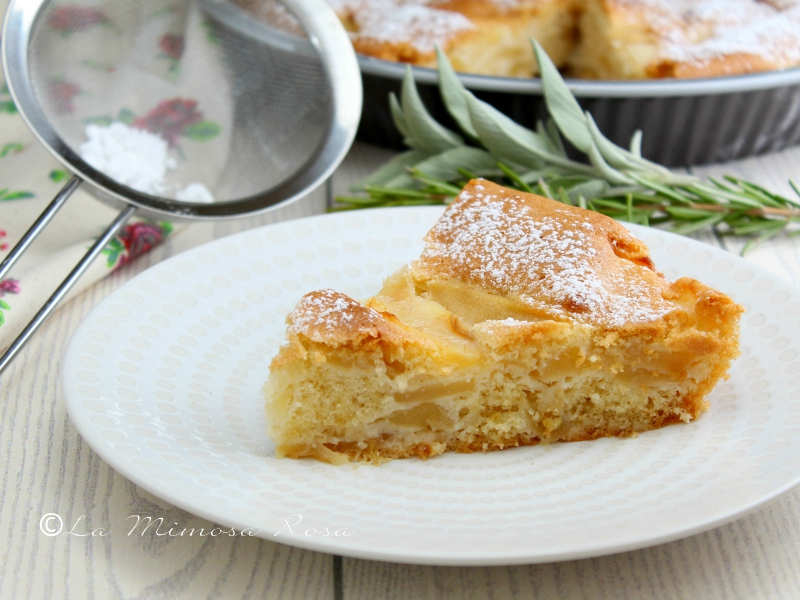

INGREDIENTI PER UNO STAMPO DA 22 CM DI DIAMETRO
Mele renette (700 g pulite) 930 g
Zucchero 200 g
Farina 00 250 g
Burro 100 g
Latte intero (a temperatura ambiente) 150 g
Uova (a temperatura ambiente) 2
Un limone
Lievito in polvere per dolci 16 g
Cannella in polvere ½ cucchiaino
Sale fino 1 pizzico
